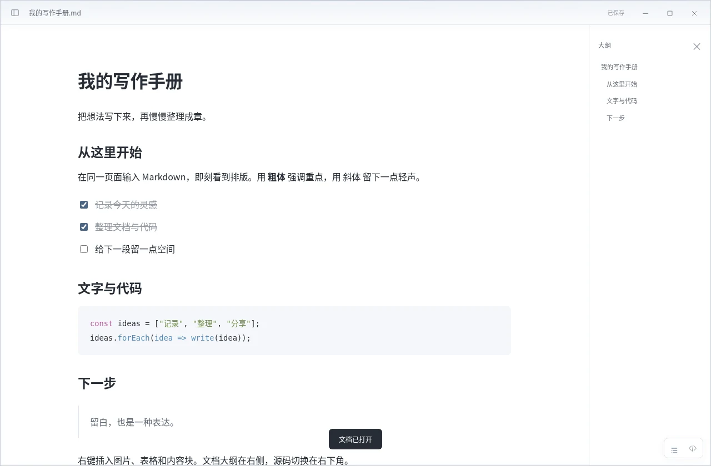

01 / 自然地写
想写，就直接写。
输入即呈现，不必来回切换预览。
熟悉 Markdown？照常输入。
想插入内容？一个 / 就够了。
今天的灵感
/
功能示意 · 在软件中输入 / 即可唤起
一个轻巧、安静的 Markdown 编辑器。
边写边呈现，让注意力回到文字本身。

轻装上阵约 1.8 MB 的便携包，解压即用。
本地为先无需账号，文档留在自己的电脑。
自由带走保存为 .md，让内容属于你。
MADE FOR WRITING
熟悉的 Markdown，直观的内容块。
需要的工具恰好在手边，
让记录自然地发生。
输入即呈现，不必来回切换预览。
熟悉 Markdown？照常输入。
想插入内容？一个 / 就够了。
图片、表格、代码，各得其所。
拖入一张图，记下一段代码，
把零散的想法整理成完整文档。
| 内容 | 状态 |
|---|---|
| 整理想法 | 已完成 |
| 记录下一步 | 继续写下去 |
const idea = {
title: "从这里开始",
ready: true
};JavaScript选择、拖入或粘贴。保存时自动整理本地附件，另存为也能带走图片。
增删行列、切换表头，用清楚的结构整理计划与项目进度。
26 项代码语言选项，支持整行缩进、复制、自动换行与源码编辑。
全文查找替换与标题大纲，长文档也能快速定位，轻松修改。
保存 Markdown，导出 HTML，或通过系统打印窗口保存为 PDF。
无需登录即可编辑，草稿在本机恢复。手书不会上传你的文档。
MAKE IT YOURS
纯白的清爽，纸笺的温润，
或是适合夜晚的深色。
把编辑器调成你喜欢的样子。
纯白 · 干净明亮，留住文字的本色。
A SIMPLE START
不必建立工作区，不必注册账号。
一份文档，就是一个开始。
下载 Windows 便携包，
保留 EXE 与 DLL，双击 Tekaku.exe。
Ctrl + O 打开 Markdown，
或从一页空白开始写作。
Ctrl + S 保存到本机。
下一次写作，再从这里继续。
目前提供 Windows 10 / 11 x64 便携版，完整解压后运行 Tekaku.exe，保留同目录的 WebView2Loader.dll。需要系统的 Microsoft Edge WebView2 Runtime，Windows 11 通常已自带。无需安装 Go、Node.js 或 .NET。暂不提供 macOS 和 Linux 版本。
1.8 MB 是便携 ZIP 下载包的大小，程序本体约 4.2 MB，另附约 135 KB 的 SDK 加载器 DLL。手书使用系统 WebView2，不随包附带完整浏览器。运行内存会随文档大小和 WebView2 版本变化，需要合计程序及 WebView2 子进程；目前没有提供 Windows 实机内存测量值。
Markdown 文件保存在你选择的位置。新插入的本地图片在保存时写入同目录下的「文档名.assets」文件夹。移动或分享文档时，请一起带上这个文件夹。草稿和设置保存在本机的 %APPDATA%\Tekaku 目录。草稿不能代替保存原文件，记得按 Ctrl+S。
安装好系统 WebView2 后，编辑、保存、本地图片和 HTML 导出均可离线使用，无需登录。手书不会上传文档。插入网络图片或主动打开网页链接时，会访问对应的网络地址。
支持标题、列表、待办、引用、链接、图片、GFM 表格、文字高亮和代码块等常用内容。暂未提供公式排版、Mermaid 渲染、脚注及 YAML front matter 专用编辑。导入导出会规范化 Markdown，复杂文档建议先另存为。单篇文档上限 8 MiB，单张图片上限 5 MiB。
当前 EXE 未签名，下载信誉也需要积累，因此浏览器或 Windows 可能显示这类提示；它不等同于已检出病毒。0.6.0 已完成 ClamAV 扫描并未检出，但没有 Windows Defender 实机检测结论。可查看 安全检查记录，并核对下载哈希。
依赖系统 WebView2 Runtime · 解压后双击运行 · 无需账号
a0941ded55b303620c0b473088b0890a3924db5988a229f01d4121e85a0a6c6b完善 Markdown 与代码编辑、26 项语言选项、缩进撤销及复制换行，附下载校验和扫描记录。
查看版本说明